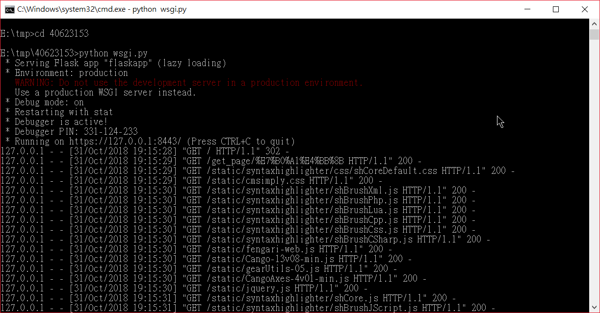

第一個禮拜接觸到github，覺得有些陌生，但經過與同學討論後對github漸漸熟悉，學會操作近端與遠端開啟，並學會更改內容後上傳至雲端。
1.認識設計系網站mde.tw ，本課程常用兩個連結(18CADP-I)、教學網站(Youtube教學網站
2.利用I進入github後領取作業、建立個人倉儲，開啟P37>利用git clone+個人倉儲>載下倉儲內容到個人隨身碟上。
3.在錄影時操作Zoomit(視窗內使用放大和縮小的功能)
4.上傳更新內容後學會"git add .、git push、git commit"等基本指令用法
5.利用python指令開啟近端網站編輯
